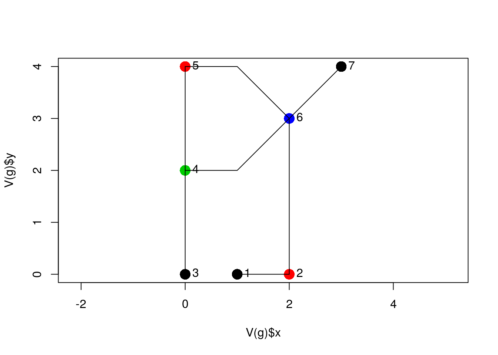
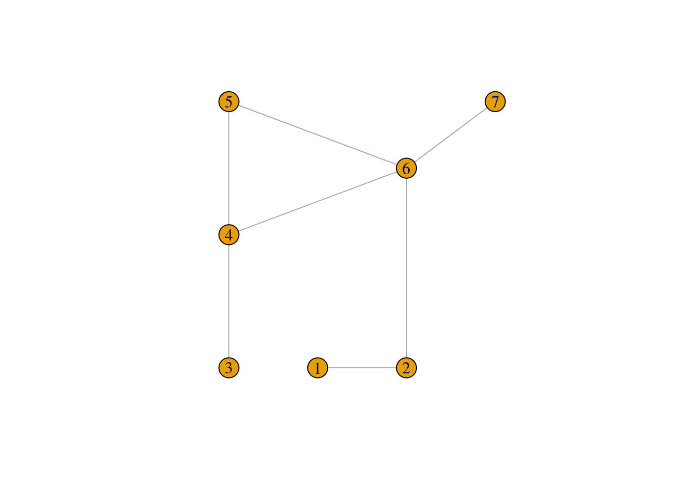
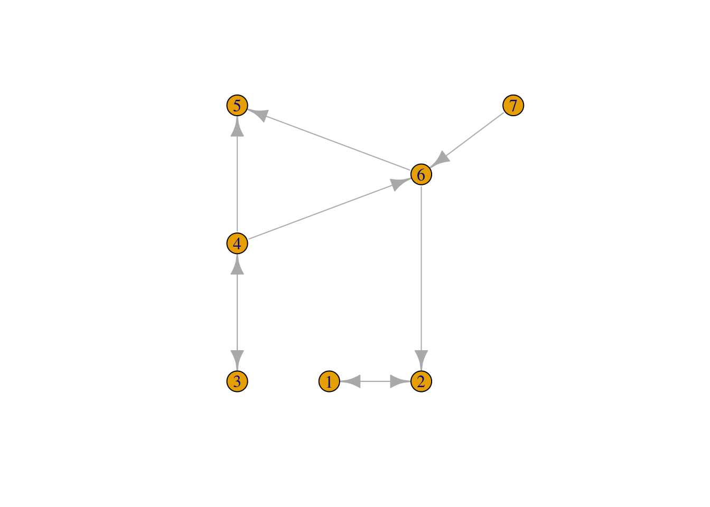
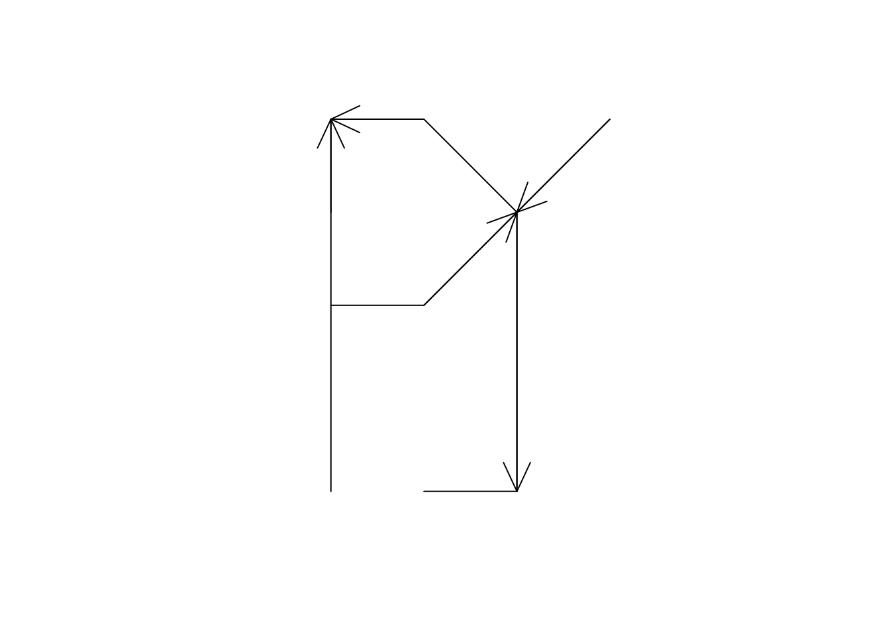
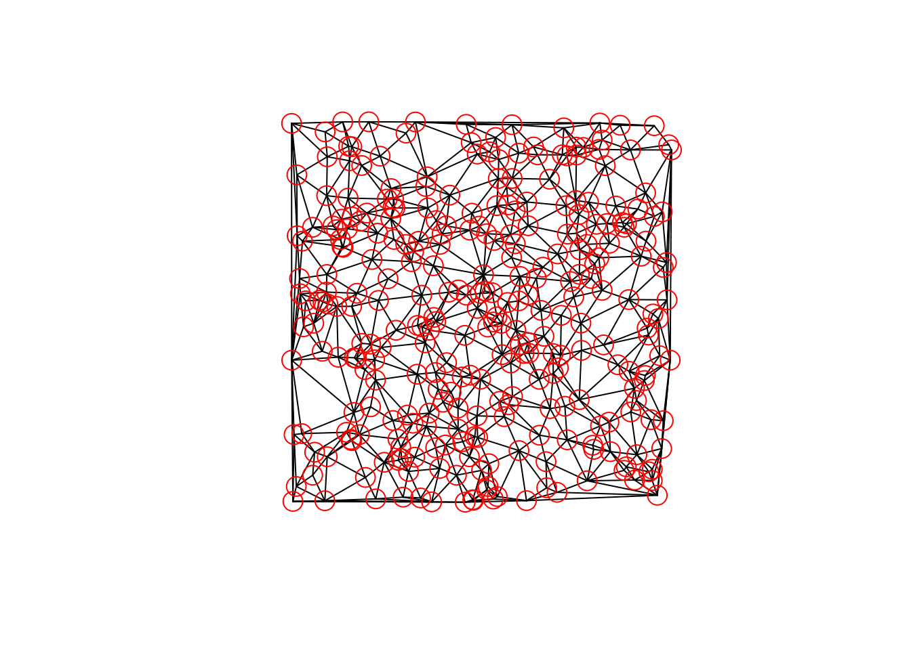
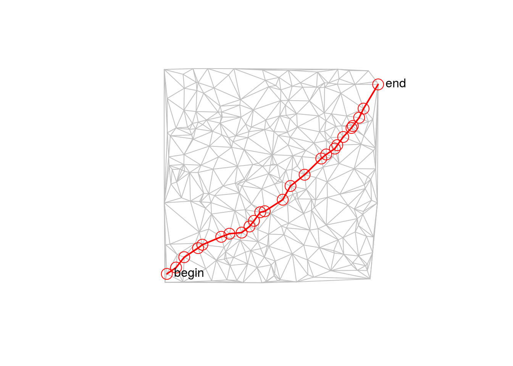
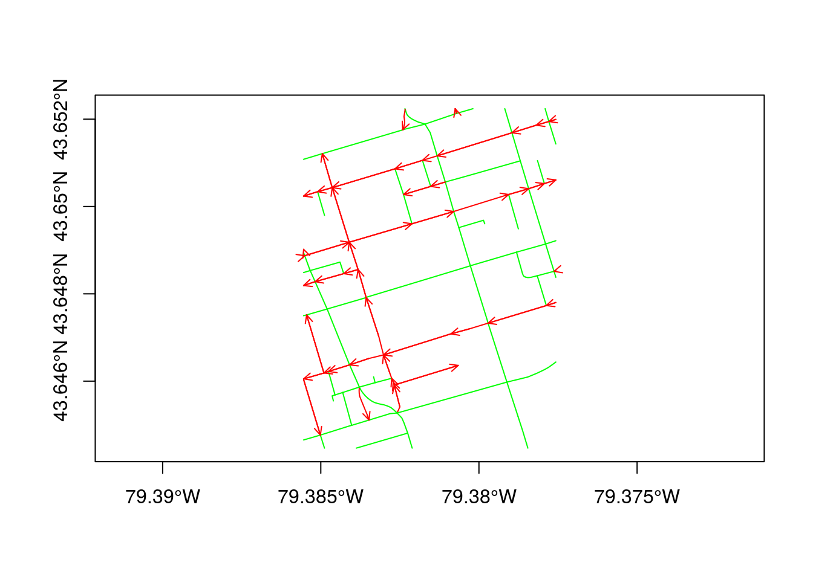
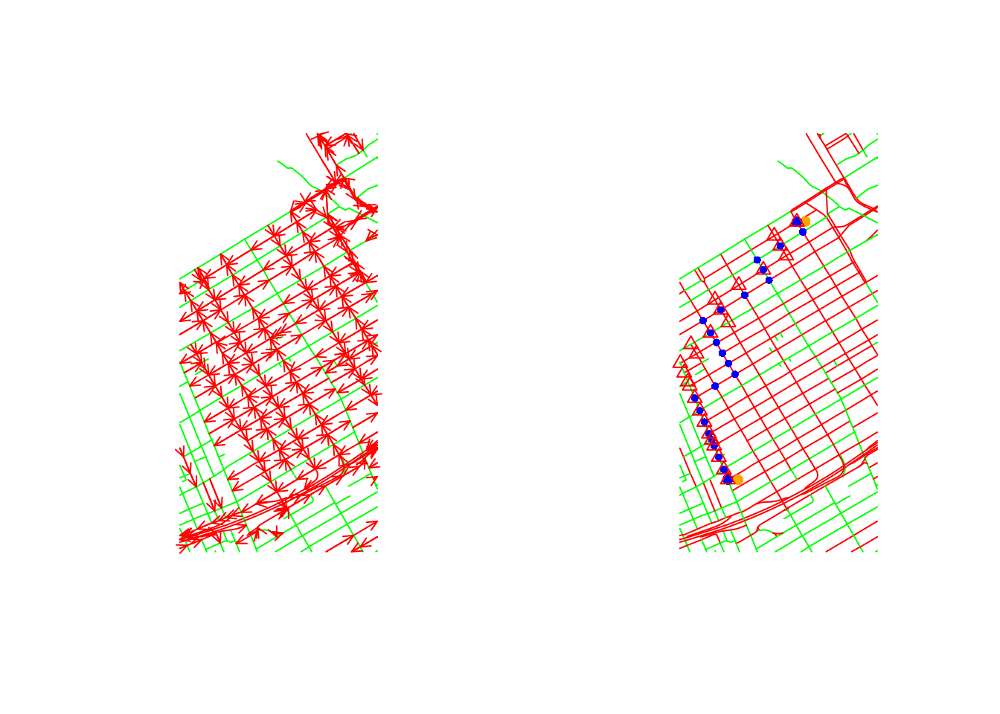

spnetwork packageThe spnetwork R package provides a class and several methods for handling spatial networks, where the edges (links) in the network are represented by spatial lines and the nodes (vertices) by spatial points. The spatial information (lines, points) is represented by the sp package, the graph information (edges, vertices, direction) is taken care of by the igraph package. Spatial networks can represent for instance road networks, or river networks.
The spnetwork allows the creation of spatial networks, plotting, summarizing, subsetting, and conversion to lines, points, or graph data structures. Also, weights of network edges (e.g. the length of an edge, or the time it takes to pass it) can be set, retrieved, and modified.
We will start with a little example that creates a toy network from scratch. It looks a bit awkward; in practice we will read edge data from external files, such as shapefiles. The following example creates a SpatialLines object, with a single Line per feature:
l0 = cbind(c(1, 2), c(0, 0))
l1 = cbind(c(0, 0, 0), c(0, 1, 2))
l2 = cbind(c(0, 0, 0), c(2, 3, 4))
l3 = cbind(c(0, 1, 2), c(2, 2, 3))
l4 = cbind(c(0, 1, 2), c(4, 4, 3))
l5 = cbind(c(2, 2), c(0, 3))
l6 = cbind(c(2, 3), c(3, 4))
library(sp)
L1 = function(l) Lines(list(Line(l)), as.character(substitute(l)))
sl = SpatialLines(list(L1(l0), L1(l1), L1(l2), L1(l3), L1(l4), L1(l5), L1(l6)))The class SpatialNetwork, which looks like
library(spnetwork)
showClass("SpatialNetwork")## Class "SpatialNetwork" [package "spnetwork"]
##
## Slots:
##
## Name: g weightfield data lines bbox
## Class: igraph character data.frame list matrix
##
## Name: proj4string
## Class: CRS
##
## Extends:
## Class "SpatialLinesDataFrame", directly
## Class "SpatialLines", by class "SpatialLinesDataFrame", distance 2
## Class "Spatial", by class "SpatialLinesDataFrame", distance 3derives directly from SpatialLinesDataFrame, and contains a slot g of class igraph, and a slot weightfield that tracks which information is used to specify weights. The remaining slots, lines, data, bbox and proj4string are derived from SpatialLinesDataFrame.
The function SpatialNetwork creates a spatial network from lines only:
sln = SpatialNetwork(sl)
summary(sln)## Object of class SpatialNetwork
## Coordinates:
## min max
## x 0 3
## y 0 4
## Is projected: NA
## proj4string : [NA]
## # edges: 7 # nodes/vertices: 7
## # weightfield: length
## Graph summary:
## IGRAPH U-W- 7 7 --
## + attr: x (v/n), y (v/n), n (v/n), link_index (e/n), weight (e/n)
## Lines attributes:
## id length start end
## Min. :1.0 Min. :1.000 Min. :1.000 Min. :2.000
## 1st Qu.:2.5 1st Qu.:1.707 1st Qu.:2.500 1st Qu.:4.500
## Median :4.0 Median :2.000 Median :4.000 Median :6.000
## Mean :4.0 Mean :2.035 Mean :3.571 Mean :5.143
## 3rd Qu.:5.5 3rd Qu.:2.414 3rd Qu.:4.500 3rd Qu.:6.000
## Max. :7.0 Max. :3.000 Max. :6.000 Max. :7.000When given a set of lines only, as done here, it needs to sort out which lines are connected by comparing all first and last points of each line, and forms connections (shared nodes/vertices) when they coincide.
Optionally, SpatialNetwork can be given an igraph object (in which case it will not sort out the graph from the lines), information to override the default weights (line lengths), and (as explained below) also directions.
We can take out the graph constructed by sln@g, and plot several of its properties:
library(igraph)##
## Attaching package: 'igraph'## The following objects are masked from 'package:stats':
##
## decompose, spectrum## The following object is masked from 'package:base':
##
## uniong = sln@g
plot(V(g)$x, V(g)$y, col = V(g)$n, pch = 16, cex = 2, asp = 1)
lines(sl)
text(V(g)$x, V(g)$y, as.character(1:length(V(g))), pos = 4) where node color indicates the number of edges it is shared by.
Here, V(g)$x is the x attribute of the graph vertices (V); similarly,
E(g)$weight## [1] 1.000000 2.000000 2.000000 2.414214 2.414214 3.000000 1.414214retrieves graph edge attributes.
We can let igraph plot this graph, as in
plot(g)
and see that x and y attributes are used for the layout, but axes are rescaled and edges are replaced by straight lines.
In the example above, we can create a directed network by specifying the link directions, with 0 indicating two-way, 1 indicating one-way down-link (i.e. in the direction of the sequence of coordinates of a line), and -1 indicating one-way up-link:
sln = SpatialNetwork(sl, direction = c(0,0,1,1,-1,-1,-1))
summary(sln)## Object of class SpatialNetwork
## Coordinates:
## min max
## x 0 3
## y 0 4
## Is projected: NA
## proj4string : [NA]
## # edges: 7 # nodes/vertices: 7
## # weightfield: length
## Graph summary:
## IGRAPH D-W- 7 9 --
## + attr: x (v/n), y (v/n), n (v/n), downlink (e/l), link_index
## | (e/n), weight (e/n)
## Lines attributes:
## id direction length start
## Min. :1.0 Min. :-1.0000 Min. :1.000 Min. :1.000
## 1st Qu.:2.5 1st Qu.:-1.0000 1st Qu.:1.707 1st Qu.:2.500
## Median :4.0 Median : 0.0000 Median :2.000 Median :4.000
## Mean :4.0 Mean :-0.1429 Mean :2.035 Mean :3.571
## 3rd Qu.:5.5 3rd Qu.: 0.5000 3rd Qu.:2.414 3rd Qu.:4.500
## Max. :7.0 Max. : 1.0000 Max. :3.000 Max. :6.000
## end
## Min. :2.000
## 1st Qu.:4.500
## Median :6.000
## Mean :5.143
## 3rd Qu.:6.000
## Max. :7.000we now see that the number of graph edges (9) exceeds the number of line segments (7), by a number equal to the number of two-way streets (2). Each graph edge has an index indicating which lines (links) correspond to it:
g = sln@g
E(g)$link_index## [1] 1 2 3 4 5 6 7 1 2The igraph plot of this graph now indicates edges direction:
plot(g)
and also the spnetwork plot method can add arrows to links that have only one direction:
plot(sln, arrow_size = 1)
We’ll use Delauny triangulation from package deldir:
library(deldir)## deldir 0.1-14The following function converts a set of points into a SpatialPolygons or into a SpatialLines object:
dd <- function(x, ..., to = "polygons") {
stopifnot(is(x, "Spatial"))
cc = coordinates(x)
dd = deldir(list(x = cc[, 1], y = cc[, 2]), ...)
if (to == "polygons") {
tm = triMat(dd)
fn = function(i) Polygons(list(Polygon(rbind(cc[tm[c(i, i[1]),], ]))), i)
SpatialPolygons(lapply(1:nrow(tm), fn), proj4string = x@proj4string)
} else if (to == "lines") {
segs = dd$delsgs
fn = function(i) Lines(list(Line(cc[c(segs[i, 5], segs[i, 6]), ])), i)
SpatialLines(lapply(1:nrow(segs), fn), proj4string = x@proj4string)
} else stop("argument to should be polygons or lines")
}We’ll generate a set of
n = 300points in a unit square:
set.seed(5432)
pts = SpatialPoints(cbind(x = sort(runif(n)), y = runif(n)))
sl = dd(pts, to = "lines")##
## PLEASE NOTE: The components "delsgs" and "summary" of the
## object returned by deldir() are now DATA FRAMES rather than
## matrices (as they were prior to release 0.0-18).
## See help("deldir").
##
## PLEASE NOTE: The process that deldir() uses for determining
## duplicated points has changed from that used in version
## 0.0-9 of this package (and previously). See help("deldir").From this object, we can create a SpatialNetwork by
net = SpatialNetwork(sl)when plotted, we can again use colour to denote the number of vertices connected to each edge:
plot(net)
points(net)
Now we compute the shortest path from the left-most point (1) to the right-most one (100):
path = get.shortest.paths(net@g, 1, n, output = "both")
sp = as.vector(path$vpath[[1]])
ids = as_ids(path$epath[[1]])and plot it
plot(net, col = 'grey')
sel = net[ids,]
lines(sel, col = 'red', lwd = 2)
points(sel)
text(V(net@g)$x[c(1, n)], V(net@g)$y[c(1, n)], c("begin", "end"), pos = 4)
Note that net[ids,] subsets the SpatialNetwork object, including the graph structure:
summary(sel)## Object of class SpatialNetwork
## Coordinates:
## min max
## x 0.01410377 0.9961827
## y 0.04406870 0.9258722
## Is projected: NA
## proj4string : [NA]
## # edges: 24 # nodes/vertices: 25
## # weightfield: length
## Graph summary:
## IGRAPH U-W- 25 24 --
## + attr: x (v/n), y (v/n), n (v/n), link_index (e/n), weight (e/n)
## Lines attributes:
## id length start end
## Min. : 2.0 Min. :0.01086 Min. : 3.0 Min. : 1.00
## 1st Qu.:232.8 1st Qu.:0.03875 1st Qu.: 91.0 1st Qu.: 72.25
## Median :424.0 Median :0.04921 Median :152.0 Median :125.50
## Mean :380.7 Mean :0.05683 Mean :137.9 Mean :120.25
## 3rd Qu.:529.2 3rd Qu.:0.07425 3rd Qu.:187.5 3rd Qu.:184.00
## Max. :879.0 Max. :0.13141 Max. :300.0 Max. :207.00As the edge weights are computed by Line lengths, this is the geographically shortest path from start to end.
Package spnetwork comes with two toy data sets: torontocentre and ottawacentre. In the following plot, the Toronto city centre is plotted using green for two-way streets, and red for one-way streets, and arrows indicating one-way road direction.
data("torontocentre")
tc = SpatialNetwork(torontocentre, direction = torontocentre$DIRECTION_)
plot(tc, col = ifelse(torontocentre$DIRECTION_ == 0, 'green', 'red'),
arrow_size = .3, axes = TRUE)## Warning in arrows(pt[2, 1], pt[2, 2], pt[1, 1], pt[1, 2], length = 0.25 * :
## zero-length arrow is of indeterminate angle and so skipped
The following example first finds the shortest path between two arbitrary points (orange) and the corresponding nearest points formed by the graph nodes (blue). From these two blue points, shortest paths are found and plotted by nodes going north (blue circles) and going south (red triangles). Clearly, this leads to two different routes in a directed network.
data("ottawacentre")
oc = SpatialNetwork(ottawacentre, direction = ottawacentre$DIRECTION_)
par(mfrow = c(1, 2))
plot(oc, col = ifelse(ottawacentre$DIRECTION_ == 0, 'green', 'red'), arrow_size=.3)
plot(oc, col = ifelse(ottawacentre$DIRECTION_ == 0, 'green', 'red'))
# find two distant points:
m = rbind(
c( -75.70246, 45.40728),
c( -75.69669, 45.42286)
)
pts = SpatialPoints(m, CRS(proj4string(oc)))
points(pts, col = 'orange', pch = 16)
# find nearest nodes:
oc.p = as(oc, "SpatialPointsDataFrame")
nearest = apply(spDists(pts, oc.p), 1, which.min)
points(oc.p[nearest, ], col = 'blue', pch = 16)
path = get.shortest.paths(oc@g, nearest[1], nearest[2], output = "both")
sp = as.vector(path$vpath[[1]])
ids = as_ids(path$epath[[1]])
points(oc[,ids], col = 'blue', cex = .7, pch = 16)
path = get.shortest.paths(oc@g, nearest[2], nearest[1], output = "both")
# sp = as.vector(path$vpath[[1]])
ids = as_ids(path$epath[[1]])
points(oc[,ids], col = 'red', cex = 1, pch = 2)